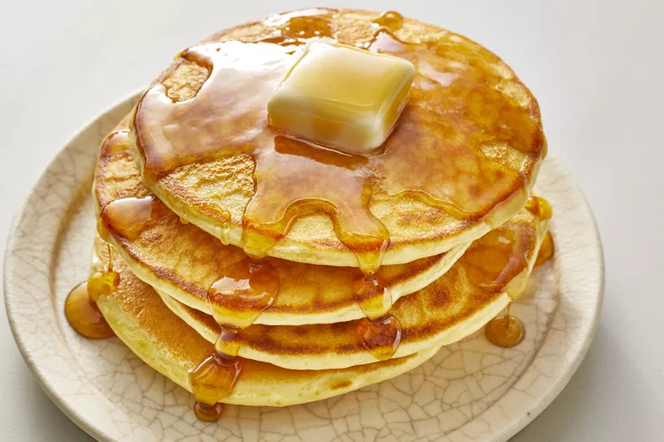

Old Fashioned Pancakes

Description
Perfect pancakes are easier to make than you think. This pancake recipe produces thick, fluffy, and all-around delicious pancakes with just a few ingredients that are probably already in your kitchen (and it's so much better than the boxed stuff).
How to make pancackes
Ingredients
- Flour
- Baking Powder
- Sugar
- Salt
- Milk
- Butter
- Egg
Steps
- Sift the dry ingredients together
- Make a well, then add wet ingredients. Stir to combine
- Scoop the batter onto a hot griddle or pan
- Cook for two to three minutes, then flip
- Continue cooking until brown on both sides